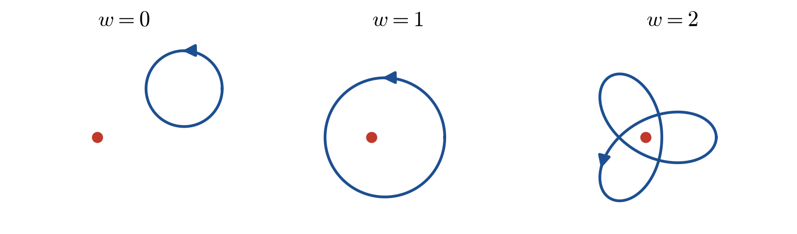
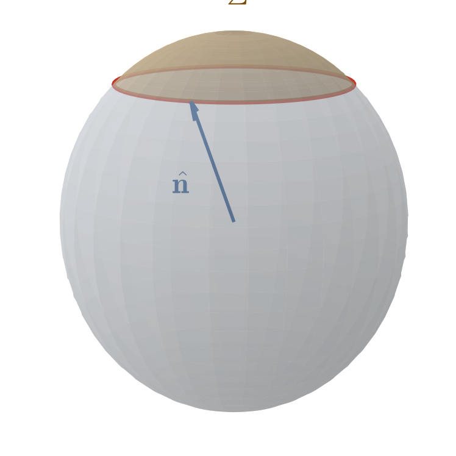
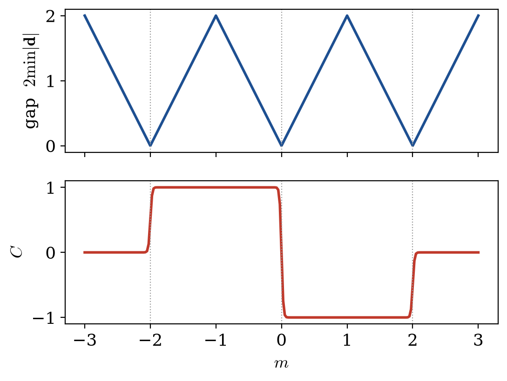
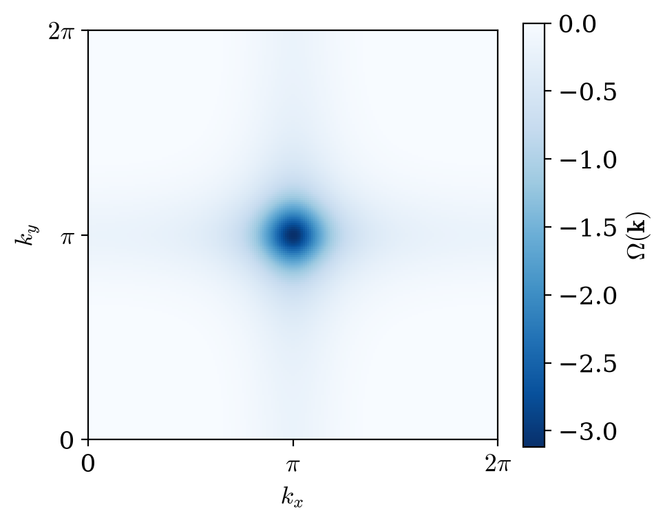

A first look, November 2026 · live-mode example
The quantum states that a system can occupy, as a parameter such as the crystal momentum \(\mathbf k\) varies, form a curved space. Nearby states lie a definite distance apart, which the quantum metric measures, and a closed loop of states carries a phase, which the Berry curvature measures.
When the parameter space is closed, as the Brillouin zone is, the total Berry curvature of a band equals \(2\pi\) times an integer, the Chern number \(C\). No smooth change of the crystal can alter \(C\), and in a two-dimensional insulator \(C\) fixes the Hall conductance at \(C\,e^2/h\).
Winding number. For a closed curve \(t\mapsto(x(t),y(t))\), \(0\le t\le 1\), in the plane that avoids the origin, with polar angle \(\theta=\arctan(y/x)\),
\[ w=\htmlId{w-norm}{\frac{1}{2\pi}}\oint \htmlId{w-dth}{\mathrm{d}\theta}=\frac{1}{2\pi}\oint \frac{x\,\mathrm{d}y-y\,\mathrm{d}x}{\htmlId{w-den}{x^2+y^2}}. \tag{1.1} \]
The curve closes, so \(\theta(1)\) and \(\theta(0)\) describe the same point and differ by \(2\pi w\): \(w\) is an integer. The integrand is local, since it depends only on the curve near each point, and the result is global (Figure 1.1).

If we deform the curve, \(w\) stays fixed, with one exception: the curve may pass through the origin, where \(\theta\) is undefined and the integrand diverges. The pattern “a local integrand, a global integer, and a change only where the integrand is undefined” carries over unchanged to everything below.
At each point of a closed surface, the Gaussian curvature \(K\) is the product of the two principal curvatures.
Gauss–Bonnet. For any closed surface \(S\) [4],
\[ \htmlId{gb-int}{\int_S K\,\mathrm{d}A}=\htmlId{gb-chi}{2\pi\chi},\qquad \chi=2-2\,(\text{number of holes}). \tag{1.2} \]
The Berry curvature of Section 3 plays the role of \(K\), and the Chern number that of \(\chi\).
The vectors \(|u\rangle\) and \(e^{i\beta}|u\rangle\) describe the same physical state. Which candidate for the distance between two normalized states \(|u\rangle\) and \(|v\rangle\) gives zero for this pair, whatever \(\beta\) is?
Two vectors that differ by a phase, \(|u\rangle\) and \(e^{i\beta}|u\rangle\), describe the same physical state, so the distance must ignore such phases. The overlap probability ignores them: two normalized states are identical exactly when \(|\langle u|v\rangle|^2=1\).
Quantum metric. With \(\partial_\mu=\partial/\partial\lambda^\mu\), a sum over repeated indices, and the Berry connection \(A_\mu=i\langle u|\partial_\mu u\rangle\) (real),
\[ \begin{aligned}\mathrm{d}s^2&=1-\big|\langle u(\boldsymbol\lambda)|u(\boldsymbol\lambda+\mathrm{d}\boldsymbol\lambda)\rangle\big|^2=\htmlId{m-gdd}{g_{\mu\nu}\,\mathrm{d}\lambda^\mu\mathrm{d}\lambda^\nu},\\ g_{\mu\nu}&=\htmlId{m-re}{\mathrm{Re}\langle\partial_\mu u|\partial_\nu u\rangle}-\htmlId{m-aa}{A_\mu A_\nu} .\end{aligned} \tag{2.1} \]
One and two derivatives of \(\langle u|u\rangle=1\) give the two facts that enter the expansion:
\[ \begin{aligned} \langle\partial_\mu u|u\rangle+\langle u|\partial_\mu u\rangle=0\quad&\Longrightarrow\quad\langle u|\partial_\mu u\rangle=-iA_\mu,\ A_\mu\in\mathbb R,\\ \mathrm{Re}\langle u|\partial_\mu\partial_\nu u\rangle&=-\mathrm{Re}\langle\partial_\mu u|\partial_\nu u\rangle\qquad\text{(symmetrized in }\mu\nu). \end{aligned} \tag{2.2} \]
Only the part symmetric in \(\mu\nu\) survives contraction with \(\mathrm{d}\lambda^\mu\mathrm{d}\lambda^\nu\). The distance then follows in one chain:
\[ \begin{aligned} \mathrm{d}s^2&=1-\Big|1-iA_\mu\,\mathrm{d}\lambda^\mu+\tfrac12\langle u|\partial_\mu\partial_\nu u\rangle\,\mathrm{d}\lambda^\mu\mathrm{d}\lambda^\nu\Big|^2 &&{\footnotesize\text{Taylor}}\\ &=-\big(\mathrm{Re}\langle u|\partial_\mu\partial_\nu u\rangle+A_\mu A_\nu\big)\,\mathrm{d}\lambda^\mu\mathrm{d}\lambda^\nu &&{\footnotesize\text{first order is imaginary}}\\ &=\underbrace{\big(\mathrm{Re}\langle\partial_\mu u|\partial_\nu u\rangle-A_\mu A_\nu\big)}_{g_{\mu\nu}}\,\mathrm{d}\lambda^\mu\mathrm{d}\lambda^\nu &&{\footnotesize\text{(2.2)}} \end{aligned} \tag{2.3} \]
Subtracting \(A_\mu A_\nu\) removes the part of \(|\partial_\mu u\rangle\) that points along \(|u\rangle\) itself, which only changes the phase.
Replacing \(|u\rangle\) by \(e^{-i\beta(\boldsymbol\lambda)}|u\rangle\) leaves \(g_{\mu\nu}\) unchanged, as it must, since the distance contains only an overlap probability.
Take the one-parameter family \(|u(\lambda)\rangle=e^{i\lambda}|u_0\rangle\), with \(|u_0\rangle\) fixed and normalized. Use (2.1) to find \(g_{\lambda\lambda}\).
Berry phase, connection and curvature. For the closed loop through \(u_1,u_2,\dots,u_N\) [1, 2],
\[ \gamma=-\arg\big(\htmlId{b-12}{\langle u_1|u_2\rangle}\htmlId{b-23}{\langle u_2|u_3\rangle}\cdots\langle u_N|u_1\rangle\big). \tag{3.1} \]
For a smooth loop, \(\gamma=\oint A_\mu\,\mathrm{d}\lambda^\mu\) with the Berry connection \(\htmlId{b-A}{A_\mu=i\langle u|\partial_\mu u\rangle}\). For a loop that bounds a surface in a two-parameter space \((x,y)\), Stokes' theorem gives \(\gamma=\int\Omega\,\mathrm{d}x\,\mathrm{d}y\) with the Berry curvature \(\Omega=\partial_x A_y-\partial_y A_x\).
\[ \begin{aligned} \gamma&=-\arg\prod_j\big(1-iA_\mu\,\mathrm{d}\lambda^\mu\big) &&\text{neighbouring overlaps, (2.2)}\\ &=-\arg\exp\Big(-i\oint A_\mu\,\mathrm{d}\lambda^\mu\Big) &&1-ix\approx e^{-ix}\\ &=\oint A_\mu\,\mathrm{d}\lambda^\mu . \end{aligned} \tag{3.2} \]
Gauge rule and curvature. If we use \(|u'\rangle=e^{-i\beta}|u\rangle\) in place of \(|u\rangle\), then \(\htmlId{c-gauge}{A'_\mu=A_\mu+\partial_\mu\beta}\), the Berry phase changes by \(2\pi n\), and \(\Omega\) is unchanged. The curvature is
\[ \Omega=-2\,\mathrm{Im}\langle\partial_x u|\partial_y u\rangle. \tag{3.3} \]
\[ \begin{aligned} A'_\mu&=i\langle u|e^{i\beta}\,\partial_\mu\big(e^{-i\beta}|u\rangle\big)\\ &=i\langle u|\big(-i\,\partial_\mu\beta\big)|u\rangle+i\langle u|\partial_\mu u\rangle=A_\mu+\partial_\mu\beta,\\ \oint A'_\mu\,\mathrm{d}\lambda^\mu&=\oint A_\mu\,\mathrm{d}\lambda^\mu+\underbrace{\oint\partial_\mu\beta\,\mathrm{d}\lambda^\mu}_{2\pi n} &&{\footnotesize\text{the state returns}} \end{aligned} \tag{3.4} \]
The curl of \(\partial_\mu\beta\) vanishes, so \(\Omega\) is gauge invariant. For (3.3):
\[ \begin{aligned} \Omega&=i\big(\langle\partial_x u|\partial_y u\rangle+\langle u|\partial_x\partial_y u\rangle\big)\\ &\quad-i\big(\langle\partial_y u|\partial_x u\rangle+\langle u|\partial_y\partial_x u\rangle\big) &&{\footnotesize\text{(2.2)}}\\ &=i\big(\langle\partial_x u|\partial_y u\rangle-\langle\partial_y u|\partial_x u\rangle\big) &&{\footnotesize\text{2nd derivatives cancel}}\\ &=-2\,\mathrm{Im}\langle\partial_x u|\partial_y u\rangle &&z-\bar z=2i\,\mathrm{Im}\,z \end{aligned} \tag{3.5} \]
In the language of electromagnetism, \(A_\mu\) is a vector potential in parameter space, \(\Omega\) is the magnetic field it produces, and \(\gamma\) is the flux through the loop, like an Aharonov–Bohm phase.
The metric and the curvature are the real and imaginary parts of a single complex matrix [[pt-tensor]].
Quantum geometric tensor.
\[ \begin{aligned}Q_{\mu\nu}&=\langle\partial_\mu u|\partial_\nu u\rangle-\langle\partial_\mu u|u\rangle\langle u|\partial_\nu u\rangle,\\ \mathrm{Re}\,Q_{\mu\nu}&=g_{\mu\nu},\qquad \mathrm{Im}\,Q_{xy}=-\tfrac12\Omega .\end{aligned} \tag{4.1} \]
\[ \begin{aligned} Q_{\mu\nu}&=\langle\partial_\mu u|\partial_\nu u\rangle-(iA_\mu)(-iA_\nu)=\langle\partial_\mu u|\partial_\nu u\rangle-A_\mu A_\nu &&\text{(2.2)}\\ &\Longrightarrow\ \mathrm{Re}\,Q_{\mu\nu}=g_{\mu\nu},\ \mathrm{Im}\,Q_{xy}=-\tfrac12\Omega &&{\footnotesize\text{(2.1), (3.3)}} \end{aligned} \tag{4.2} \]
Curvature needs distance. \(g_{xx}+g_{yy}\ge|\Omega|\).
\(Q\) is the Gram matrix of the vectors \(|\partial_\mu u\rangle\) with their components along \(|u\rangle\) removed, so it is positive semidefinite, and its \(2\times2\) determinant is non-negative [[pt-psd]]:
\[ \begin{aligned} 0\le\det Q&=g_{xx}g_{yy}-|Q_{xy}|^2=g_{xx}g_{yy}-g_{xy}^2-\tfrac14\Omega^2\\ \Longrightarrow\quad g_{xx}+g_{yy}&\ge2\sqrt{g_{xx}g_{yy}}\ge|\Omega| &&{\footnotesize\text{AM–GM}} \end{aligned} \tag{4.3} \]
Take a spin-\(\tfrac12\) in a magnetic field \(\mathbf B=B\hat{\mathbf n}\), where the unit vector \(\hat{\mathbf n}\) has polar angle \(\theta\) and azimuth \(\phi\).
The Bloch sphere.
\[ \begin{gathered}|u(\theta,\phi)\rangle=\begin{pmatrix}\cos(\theta/2)\\ e^{i\phi}\sin(\theta/2)\end{pmatrix},\\ |\partial_\theta u\rangle=\frac12\begin{pmatrix}-\sin(\theta/2)\\ e^{i\phi}\cos(\theta/2)\end{pmatrix},\quad |\partial_\phi u\rangle=\begin{pmatrix}0\\ ie^{i\phi}\sin(\theta/2)\end{pmatrix}.\end{gathered} \tag{4.4} \]
The curvature is \(\Omega_{\theta\phi}=-\tfrac12\sin\theta\) and the metric is \(\mathrm{d}s^2=\tfrac14(\mathrm{d}\theta^2+\sin^2\theta\,\mathrm{d}\phi^2)\): the states of a spin form a sphere of radius \(\tfrac12\), and the curvature equals \(-2\) times its area element \(\tfrac14\sin\theta\,\mathrm{d}\theta\,\mathrm{d}\phi\).
\[ \begin{aligned} A_\theta&=i\langle u|\partial_\theta u\rangle=\tfrac{i}{2}\big(-\cos\tfrac{\theta}{2}\sin\tfrac{\theta}{2}+\sin\tfrac{\theta}{2}\cos\tfrac{\theta}{2}\big)=0,\\ A_\phi&=i\langle u|\partial_\phi u\rangle=i\cdot i\sin^2\tfrac{\theta}{2}=-\sin^2\tfrac{\theta}{2},\\ \Omega_{\theta\phi}&=\partial_\theta A_\phi-\partial_\phi A_\theta=-\sin\tfrac{\theta}{2}\cos\tfrac{\theta}{2}=-\tfrac12\sin\theta . \end{aligned} \tag{4.5} \]
\[ \begin{aligned} g_{\theta\theta}&=\langle\partial_\theta u|\partial_\theta u\rangle-A_\theta^2=\tfrac14,\\ g_{\phi\phi}&=\langle\partial_\phi u|\partial_\phi u\rangle-A_\phi^2=\sin^2\tfrac{\theta}{2}-\sin^4\tfrac{\theta}{2}=\sin^2\tfrac{\theta}{2}\cos^2\tfrac{\theta}{2}=\tfrac14\sin^2\theta,\\ g_{\theta\phi}&=\mathrm{Re}\langle\partial_\theta u|\partial_\phi u\rangle-A_\theta A_\phi=\mathrm{Re}\big(\tfrac{i}{2}\sin\tfrac{\theta}{2}\cos\tfrac{\theta}{2}\big)=0. \end{aligned} \tag{4.6} \]
A loop of field directions that encloses solid angle \(\Sigma\) therefore gives the Berry phase \(\gamma=-\tfrac12\Sigma\) (Figure 4.1), Berry's original example [1].

Over the whole sphere, the curvature integrates to \(-2\pi\).
\[ \int_0^{\pi}\!\!\int_0^{2\pi}\Omega_{\theta\phi}\,\mathrm{d}\phi\,\mathrm{d}\theta=-\tfrac12\cdot 2\pi\cdot\int_0^\pi\sin\theta\,\mathrm{d}\theta=-2\pi . \tag{4.7} \]
Chern number. For a state defined on a closed two-dimensional parameter space \(M\) [3, 4],
\[ C=\frac{1}{2\pi}\int_M \Omega\,\mathrm{d}x\,\mathrm{d}y \tag{5.1} \]
is an integer; (4.7) is the case where \(M\) is the sphere. It measures the obstruction to a single smooth choice of phase over all of \(M\); \(C=0\) exactly when such a choice exists.
We divide \(M\) into patches \(P\) on which a smooth phase choice exists. Along each boundary shared by two patches, the two phase choices differ by some \(e^{i\beta}\), so by Stokes' theorem in each patch and then (3.4),
\[ \int_M\Omega\,\mathrm{d}x\,\mathrm{d}y=\sum_P\oint_{\partial P}A_\mu\,\mathrm{d}\lambda^\mu=\sum_{\text{shared boundaries}}\oint\partial_\mu\beta\,\mathrm{d}\lambda^\mu=2\pi\sum n . \tag{5.2} \]
For a two-band crystal, write \(H(\mathbf k)=\mathbf d(\mathbf k)\cdot\boldsymbol\sigma\), with Pauli matrices \(\boldsymbol\sigma\) acting on two orbitals. The bands are \(E_\pm=\pm|\mathbf d|\), and the lower band's state at \(\mathbf k\) is the Bloch-sphere state pointing along \(-\hat{\mathbf n}(\mathbf k)\), with \(\hat{\mathbf n}=\mathbf d/|\mathbf d|\).
Chern number as a degree. For the lower band of \(H=\mathbf d\cdot\boldsymbol\sigma\),
\[ C=\deg\hat{\mathbf n}, \tag{5.3} \]
the number of times the map \(\mathbf k\mapsto\hat{\mathbf n}(\mathbf k)\) covers the sphere, counted with orientation.
The curvature at \(\mathbf k\) is the sphere's curvature at \(-\hat{\mathbf n}(\mathbf k)\), multiplied by the Jacobian of the map \(\mathbf k\mapsto-\hat{\mathbf n}(\mathbf k)\). Integrating over the Brillouin zone therefore gives the sphere's total flux \(-2\pi\) from (4.7), times the degree of that map. Reversing every vector reverses the orientation of the sphere, so \(\deg(-\hat{\mathbf n})=-\deg\hat{\mathbf n}\), and
\[ C=\frac{1}{2\pi}\,(-2\pi)\,\big(-\deg\hat{\mathbf n}\big)=\deg\hat{\mathbf n}. \tag{5.4} \]
The degree is a count: pick a point on the sphere, find every \(\mathbf k\) that maps to it, and add \(+1\) or \(-1\) for each, according to whether the map preserves or reverses orientation there.
The Qi–Wu–Zhang model [5], \(\mathbf d=(\sin k_x,\ \sin k_y,\ m+\cos k_x+\cos k_y)\) on the square Brillouin zone, has
\[ C=\begin{cases}1-1-1+1=0, & m\gt 2\quad\text{(all four points)},\\ 1-1-1=-1, & 0\lt m\lt 2\quad\text{(all but }(\pi,\pi)),\\ +1, & -2\lt m\lt 0\quad\text{(only }(0,0)),\\ 0, & m\lt -2\quad\text{(none)}.\end{cases} \tag{5.5} \]
We count the preimages of the north pole, \(\hat{\mathbf n}=(0,0,1)\), where the sphere's orientation agrees with that of the \((d_x,d_y)\) plane. The north pole requires \(\sin k_x=\sin k_y=0\), so \(\mathbf k\) is one of \((0,0)\), \((\pi,0)\), \((0,\pi)\), \((\pi,\pi)\), where \(d_z\) equals \(m+2\), \(m\), \(m\), \(m-2\); we keep the points with \(d_z\gt 0\).
The orientation sign at each point is that of \(\partial(d_x,d_y)/\partial(k_x,k_y)=\cos k_x\cos k_y\): \(+1\) at \((0,0)\) and \((\pi,\pi)\), \(-1\) at \((\pi,0)\) and \((0,\pi)\). Adding the signs of the points that qualify gives (5.5).

The integer changes only at \(m=2,0,-2\) (Figure 5.1), and at exactly these values \(\mathbf d\) vanishes somewhere in the zone (\(d_z=0\) at one of the four points), so the two bands touch. This is the origin in (1.1) again: the integer can change only where the state is undefined.
The mathematics carries over to a crystal because of three facts.
First, the Brillouin zone is a closed surface: \(\mathbf k\) and \(\mathbf k+\mathbf G\) label the same state, so in two dimensions the zone is a torus, and Theorem 5.1 applies to every band.
Third, \(C\) appears in a measurable response, the Hall conductance.
Quantized Hall conductance. A two-dimensional insulator has \(\sigma_{xy}=-C\,e^2/h\) with our conventions, where \(C\) is summed over the filled bands [6].
An electron in band \(n\), accelerated by a force \(\hbar\dot{\mathbf k}=-e\mathbf E\), moves with velocity [3]
\[ \mathbf v_n(\mathbf k)=\frac1\hbar\frac{\partial E_n}{\partial\mathbf k}-\dot{\mathbf k}\times\boldsymbol\Omega_n(\mathbf k), \tag{6.1} \]
where \(\boldsymbol\Omega_n=\Omega_n\hat{\mathbf z}\) in two dimensions; the second term, the anomalous velocity, follows from the time-dependent perturbation theory of a Bloch state. For \(\mathbf E=E_y\hat{\mathbf y}\), the current density of a filled band in a sample of unit area is
\[ \begin{aligned} j_x&=-e\int_{\text{BZ}}\frac{\mathrm{d}^2k}{(2\pi)^2}\,v_x=-e\int_{\text{BZ}}\frac{\mathrm{d}^2k}{(2\pi)^2}\,\big(-\dot k_y\,\Omega_n\big) &&{\footnotesize\text{(6.1), $E_n$ periodic}}\\ &=-\frac{e^2}{\hbar}E_y\int_{\text{BZ}}\frac{\mathrm{d}^2k}{(2\pi)^2}\,\Omega_n &&{\footnotesize\text{$\hbar\dot k_y=-eE_y$}}\\ &=-\frac{e^2}{\hbar}E_y\,\frac{2\pi C}{(2\pi)^2}=-\frac{e^2}{h}\,C\,E_y &&\text{(5.1)} \end{aligned} \tag{6.2} \]
Thouless, Kohmoto, Nightingale and den Nijs derived this result in 1982, and with it we understand why the quantum Hall plateaus that von Klitzing found are flat and reproducible to about one part in a billion: the measured number is a topological invariant, not a material parameter.
By the same reasoning, the edge of the sample must carry states. The vacuum outside has \(C=0\), so \(C\) must change across the edge, and \(C\) can only change where a gap closes: the gap must close somewhere along the edge.
This step needs one more premise: deep inside the sample and far outside it, the system is translation invariant and has its own \(C\), and any smooth interpolation between two Hamiltonians with different \(C\) passes through a gapless one; the edge is such an interpolation, carried out in space [7].
Most materials are not Chern insulators, but the geometry in Sections 2–4 acts in every band.
In a metal, the anomalous Hall conductivity is still the integral of \(\Omega_n\), now over only the occupied states, \(\sigma_{xy}\propto\sum_n\int_{\text{occ}}\Omega_n\,\mathrm{d}^2k\). The integral is no longer an integer, but \(\Omega_n\) is large where two bands nearly touch, so near-degeneracies dominate the response [3] (Figure 7.1).

This is the calculation behind the anomalous Hall effect in altermagnets such as RuO\(_2\), where one integrates the curvature of the bands below the Fermi energy.
Symmetry and curvature [3].
\[ \underbrace{\Omega_n(-\mathbf k)=-\Omega_n(\mathbf k)}_{\text{time reversal}},\qquad\underbrace{\Omega_n(-\mathbf k)=\Omega_n(\mathbf k)}_{\text{inversion}}\qquad\Longrightarrow\qquad\Omega_n=0\ \ \text{(both)}. \tag{7.1} \]
A nonzero anomalous Hall response therefore requires broken time reversal, and the magnetic space group fixes which components of \(\boldsymbol\Omega\) may survive.
The integral of the metric over the zone is the gauge-invariant part of the spread of the Wannier functions [8], so a band with large \(g\) cannot be built from compact orbitals. With Theorem 4.2, a Chern band has \(\int(g_{xx}+g_{yy})\,\mathrm{d}^2k\ge2\pi|C|\), and no set of exponentially localized Wannier functions exists for it [9].
In a flat band, where the kinetic energy vanishes, the superfluid weight of a superconductor is the Brillouin-zone integral of the quantum metric and is bounded below by \(|C|\), so pairs can move even when single electrons cannot [[pt-flat]].